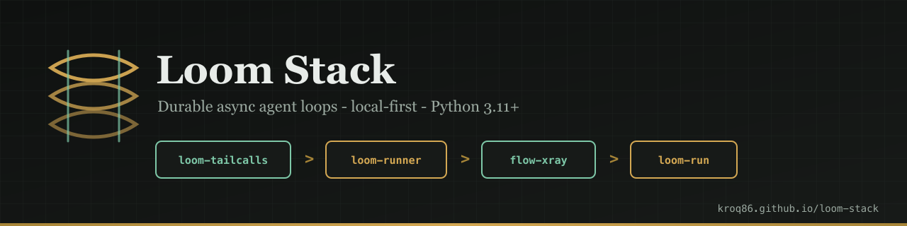

loom-tailcalls
Stack-safe async transitions
Turn tail-position return await fn(...) into an async while loop. Keep the state-machine shape; lose the stack growth.
@tailrecand@tailstreamexplain_tailcalls()for rejected shapes- Python 3.11+

Python · async · local-first
Three composable packages for long-running async agent loops. Each does one job. Wire them together when you need durability and inspectability — not a planner, not memory, not AGI.
@tailrec agent loop → loom-runner run/resume → --trace trace.html
(shape) (durability) (flow-xray)
@tailrec.Stack-safe async transitions
Turn tail-position return await fn(...) into an async while loop. Keep the state-machine shape; lose the stack growth.
@tailrec and @tailstreamexplain_tailcalls() for rejected shapesCheckpoint, resume, inspect
Durable async transition runner on SQLite. Idempotent managed tool calls, retry policies, and CLI commands to explain a run after the fact.
run / resume / explainhistory, attempts, tool-calls--trace trace.html via flow-xrayLocal HTML execution traces
See LLM calls, tool calls, branches, errors, tokens, and cost in one offline HTML file. Use standalone or through loom-runner.
@trace decoratorOfficial stack showcase
Runnable reference product: durable chat agent, multi-agent supervisor, MCP tools, mock LLM for CI. Wires tailcalls + runner + flow-xray end-to-end.
loom-run chat / superviseexplain--trace trace.htmlgit clone + pip install -e .
explain, attempt history) instead of a black box.Nothing here was physically impossible before — but it used to mean Temporal, LangGraph, hosted tracing, or months of custom infra. Loom stack makes a local-first durable agent runtime realistic for one builder.
| Problem | Before | With Loom stack |
|---|---|---|
| 100k-step loop | RecursionError or messy manual while | @tailrec (tailcalls) |
| Crash on step 47 | Start over | loom-runner resume |
| What happened? | Log grep or cloud trace account | explain + local HTML (flow-xray) |
| Retries duplicate side effects | Roll your own idempotency | RunContext.call_tool |
| Everything offline | Hard to assemble | Three pip packages, SQLite, one HTML file |
The stack is a runtime primitive, not a finished product. These are concrete directions people can ship on top — without AGI claims.
Hours or days · crash-safe · explainable
LLM + tools on Ollama or an API. Run until budget or completion; kill the process; resume later. After an incident: explain plus --trace trace.html.
Before: custom checkpoint store, retries, and debug tooling.
Now: loom-run showcase or glue model + tools onto AgentRunner. See also demo-loom-flow.
Not an LLM · long pipelines · no cloud
Poll APIs, transform, notify, repeat — as an explicit state machine. Every transition checkpointed; history and attempts when something breaks at 3am.
Before: Celery, cron scripts, or hope it does not crash.
Now: same @tailrec loop + loom-runner.
CI gate · compare runs · local traces
Golden scenarios with mock or real models. Compare checkpoint history and HTML traces across prompt or code changes — a verifiable gate, not vibes.
Before: bespoke harness + hosted observability.
Now: pytest + loom-runner + flow-xray in CI.
Every step stored · offline explain
Workflows where you must show what ran, how many times, and why it failed — SQLite checkpoints plus CLI inspection, no enterprise orchestration platform required.
Before: workflow engine procurement.
Now: narrow vertical on loom-runner.
Bad network · checkpoint · continue later
Field sync, protocol sessions, or batch jobs that cannot assume a stable process or connection. Durable state machines that are not tied to LLMs at all.
Before: hand-rolled persistence per project.
Now: tailcalls shape + runner durability.
Reference product that wires the stack into a resumable chat agent — coordinator step, mock/OpenAI LLM, local tools, optional MCP, multi-agent supervisor (v0.2).
The smallest stack that lets a Python agent run for days, survive crashes, and show you exactly what happened — on your machine.
Official showcase: github.com/kroq86/loom-run
loom-run chat → coordinator (LLM + tools) → loom-runner → --trace trace.html
Extended kroq86 stack (optional MCP): agents_architecture pattern, rule-based-verifier, mcp-docs-memory.
Not a full port of agents_architecture — a portable shell with local fallbacks when MCP is unset.
| LangGraph / Temporal / … | Loom stack | |
|---|---|---|
| Scope | Orchestration, graphs, infra | Focused primitives you compose |
| Philosophy | Platform | Libraries |
| Tracing | Often hosted | Local HTML (flow-xray) |
| Claim | Often broad | Runtime shape + durability + inspect |
# 1. Stack-safe loop shape
pip install loom-tailcalls
# 2. Durable run + inspect
pip install loom-runner
# 3. Optional local trace
pip install flow-xray
# Example (loom-runner)
loom-runner run examples/counter_agent.py --run-id demo --db runs.sqlite --max-steps 5
loom-runner resume examples/counter_agent.py --run-id demo --db runs.sqlite
loom-runner explain examples/counter_agent.py --run-id demo --db runs.sqlite
loom-runner run examples/counter_agent.py --run-id demo --trace trace.html
# Official showcase (loom-run)
loom-run chat "hello" --run-id demo --db runs.sqlite --mock-llm
loom-run supervise "hello" --run-id team --db runs.sqlite --mock-llmIntegration lab in demo-loom-flow combines tailcalls + flow-xray (+ optional Ollama). Full stack demo: loom-run.
There is no direct AGI claim. Autonomous systems are modeled as long state machines: think → act → observe → checkpoint → resume. Loom stack covers shape, durability, and local observability for that pattern — building blocks for agent runtimes, not a path to superintelligence.